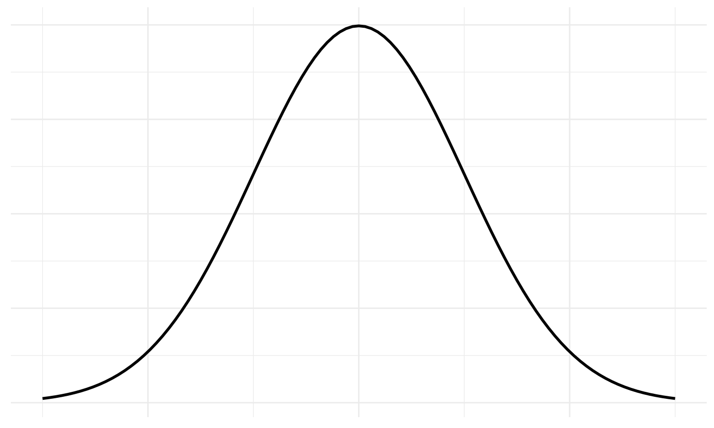
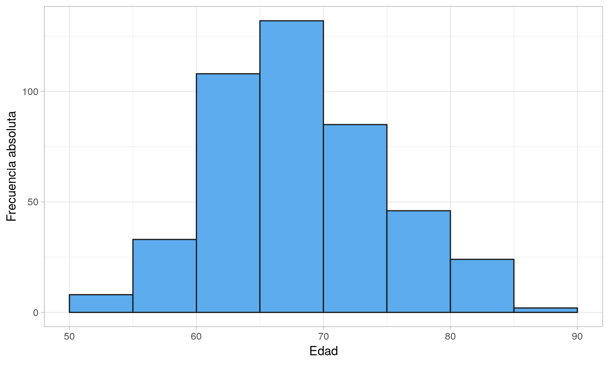
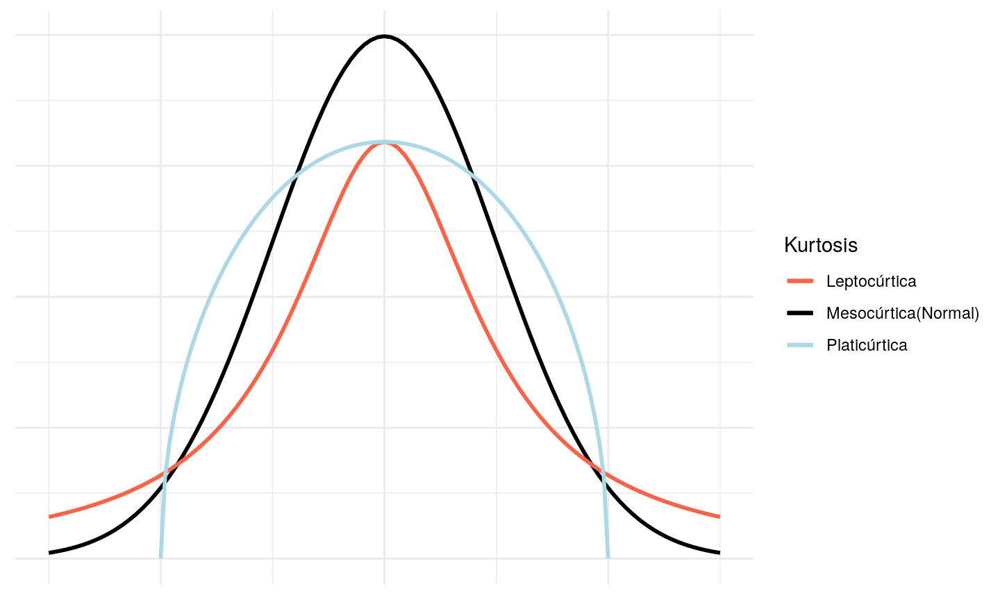
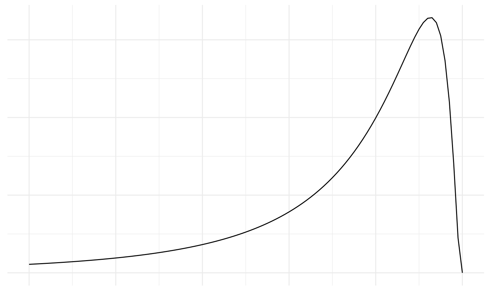
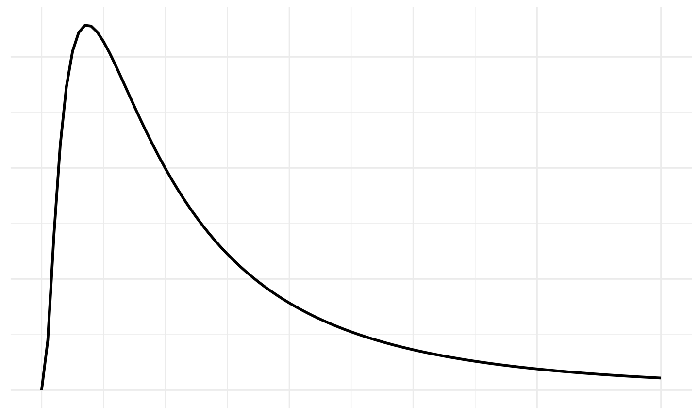
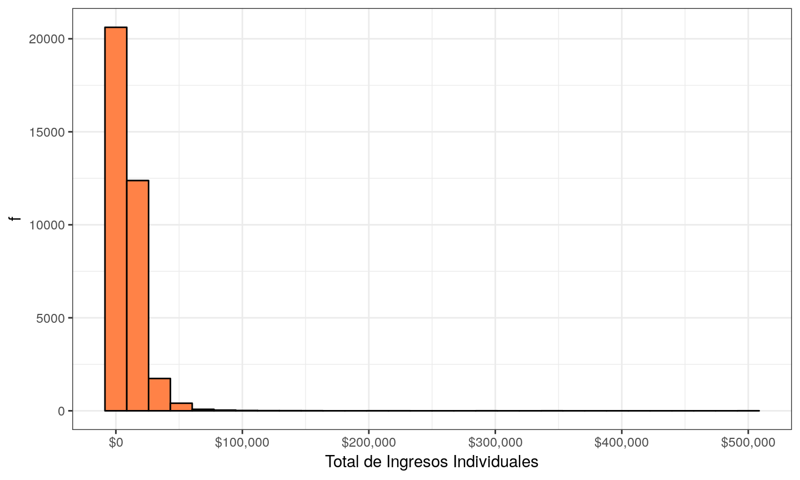

- La distribución normal es un concepto teórico que nos permite aproximar el comportamiento de una gran cantidad de varibles.
- Existe una definición matemática precisa de la distribución normal que excede los alcances de este curso.
- Nos conformaremos con saber que la distribución normal tiene una forma acampanada.
04 septiembre, 2019
Distribución Normal

Ejemplo
Imaginemos que queremos observar la altura promedio de las personas que asisten al CEPRAM y realizamos un gráfico de distribución de frecuencias.

- Podemos observar que la edad sigue una distribución aproximadamente normal.
Curtosis
- La curtosis nos da información acerca de los valores extremos o colas de la distribución.
- Mayor curtosis no implica mayor varianza, ni viceversa.
- Se clasifica en:
- Leptocúrtica
- Mesocúrtica
- Platicúrtica
- La distribución normal es mesocúrtica. La forma leptocúrtica contiene mayores valores extremos y la platicúrtica contiene menos.

- Los softwares estadísticos en general calculan un índice de curtosis.
- Un índice entre -0.5 y 0.5 indica que la distribución es mesocúrtica.
- Un índice mayor a 0.5 indica que la distribución es leptocúrtica
- Un índice menor que -0.5 indica que la distribución de platicúrtica
Asimetría
- La asimetría nos indica hacia que lado de la distribución se sitúan los valores extremos.
- Una distribución es simétrica si la media coincide con la mediana
- Si los valores extremos se ubican a la izquierda, diremos que la distribución es asimétrica a la izquierda. En este caso, la media es menor que la mediana
- Si los valores extremos se ubican a la derecha, diremos que la distribución es asimétrica a la derecha. En este caso, la media es mayor que la mediana
- Veámoslo en gráficos
Simétrica

Asimétrica a la izquierda

Asimetría derecha

Ejemplo
- Realizamos un histograma para total de ingreso individual(P47T) en la EPH del 2do Trimestre de 2017.

- El total de ingresos individual es claramente asimétrico a la derecha.
- Se puede observar que casi la mayoría de las personas tiene un ingreso entre $0 y $50.000. Sin embargo, algunas pocas personas tienen un nivel de ingresos de hasta $500.000.
- La media para el nivel de ingresos es: $9557.11. Y la mediana es: $7000.
- Podemos observar que la media es mayor que la mediana.